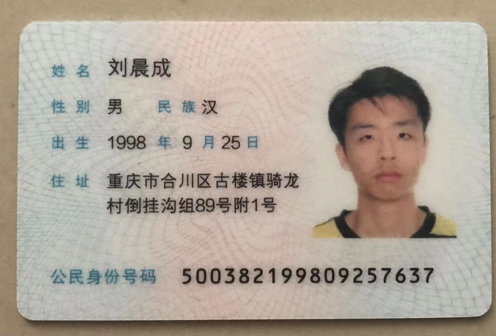

<!DOCTYPE html>
<html lang="en">
<head>
  <meta charset="UTF-8">
  <meta http-equiv="X-UA-Compatible" content="IE=edge">
  <meta name="viewport" content="width=device-width, initial-scale=1.0">
  <title>Document</title>
</head>
<body>
  <!-- <strong>文字<br>内容</strong>
  <hr> :水平线
  <br> :换行
  <h1>一级标题</h1> 
  <h2>二级标题</h2>
  <p>123123123</p>
  <p>abcabcabc</p> -->


  <!-- <strong>strong: 加粗</strong>
  <b>b: 加粗</b>
  <br><hr>
  <em>em: 倾斜</em>
  <i>i: 倾斜</i>
  <br><hr>
  <ins>ins: 下划线</ins>
  <u>u: 下划线</u>
  <br><hr>
  <del>del: 删除线</del>
  <s>s: 删除线</s> -->

  <!--  -->

  <!-- <a href="https://www.baidu.com" target="_blank">百度</a>
  <a href="./身份证正面.jpg" target="_parent">跳转照片</a>
  <a href="#">空链接</a>
  <a href="">href无内容</a> -->

  <!-- html5中，如果属性名和属性值完全一样，可以只写属性名 -->
  <!-- controls：显示控制面板   loop: 循环播放  autoplay：自动播放，但浏览器会禁用自动播放 -->
  <!-- <audio src="./GAI周延 - 威远故事.mp3" controls autoplay loop></audio>
  <audio src="./GAI周延 - 威远故事.mp3" controls="controls" autoplay="autoplay"></audio> -->
  
  <!-- 浏览器支持在静音状态下自动播放 -->
  <!-- muted：静音播放 -->
  <!-- <video src="./QQ视频20161106182729.mp4" muted controls loop></video> -->
</body>
</html>